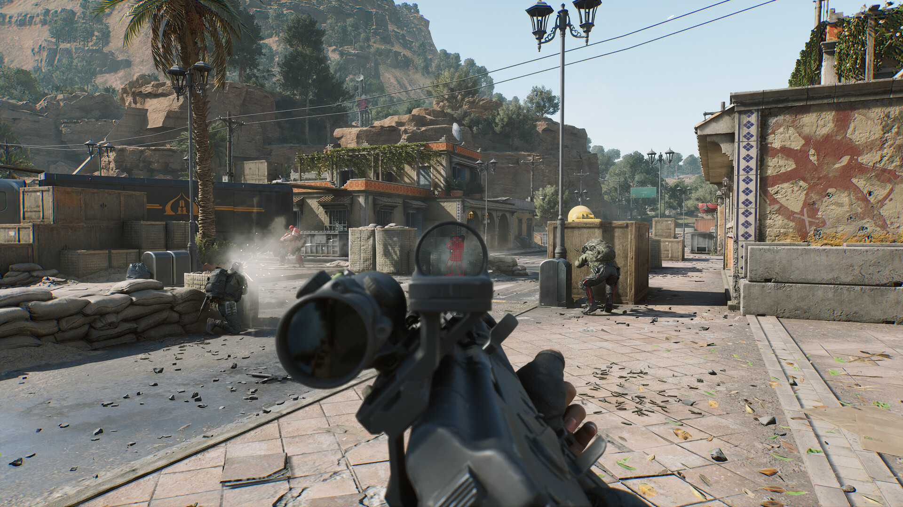
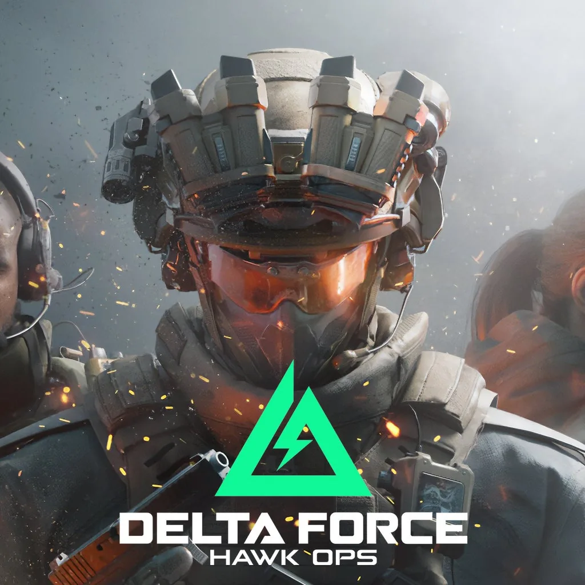

01
Warfare
大人数のチームで、広い戦場を押し引きするモード。車両とクラスの役割を活かして、前線を動かします。
大規模チーム戦
WHY THIS GAME
デルタフォースは、味方と役割を分担しながら戦う現代戦のFPS。大人数で戦場を動かすモードと、物資を集めて脱出を目指すモードがあります。
同じFPSでも、試合ごとに立ち回りを変えられるのが魅力。短い説明で特徴を知って、気になったら実際にプレイしてみましょう。
CHOOSE YOUR MODE
01
大人数のチームで、広い戦場を押し引きするモード。車両とクラスの役割を活かして、前線を動かします。
大規模チーム戦02

味方と出撃して物資を集め、無事に脱出するモード。戦うか、隠れるか、判断が結果を変えます。
脱出を目指す03
一人で突っ込むより、味方と情報を共有することが大切。初心者でもチームの役割から参加できます。
連携がカギFOR BEGINNERS
01 まずはWarfareで、マップと操作に慣れる
02 味方の近くで動き、無理な単独行動をしない
03 気になったらOperationsで脱出に挑戦する